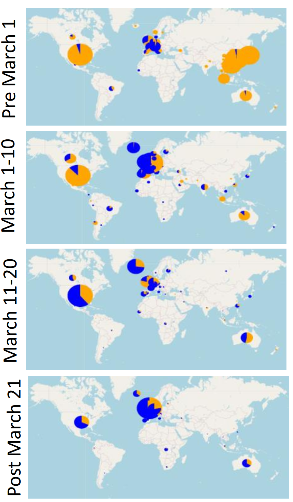

The researchers used SARS-CoV-2 genome sequences from the GISAID database. They built an automated pipeline to download and clean the sequence data before analyzing it.
The authors employed sequence data from the Global Initiative for Sharing All Influenza Data (GISAID) database, a high-quality repository of SARS-CoV-2 sequences from around the world.
The study had only 7 viral sequences from the time period March 31 – April 6 in North America. However, the study did include more than 100 sequences from this time period in Europe.
{% include hide_details.html %}The researchers identified 14 different locations in the SARS-CoV-2 genome that contained mutations, and they studied how these mutations changed over time. They found that Spike D614G became the most common strain of SARS-CoV-2 during March 2020.

Blue represents Spike D614G
The authors identified 14 different sites within the SARS-CoV-2 genome that had a mutation with at least 0.3% prevalence. The authors further chose to focus on mutations in the Spike protein, because the Spike protein is important for viral entry into the host cell.
The authors found that a large number of patients had a mutation at amino acid position 614 in the Spike protein. They demonstrated that this mutation, called Spike D614G, became the most common form of SARS-CoV-2 during March 2020.
The researchers speculated that the Spike D614G mutation might have become more common by helping the SARS-CoV-2 virus enter human cells more efficiently, or by helping it to evade the immune system. However, they did not provide any experimental evidence to support these claims.
{% include hide_details.html %}The researchers analyzed a database of individuals in Sheffield, UK, to see if patients with either the original form or the D614G mutation differed in their risk of being admitted to the hospital or the ICU. The researchers did not find a statistically significant difference in the clinical outcomes between the two forms of the virus. The researchers did show a small increase in viral load for patients with the D614G form of the virus. No information was provided about comorbidities for the different cohorts. However, comorbidities have a large impact on SARS-CoV-2 outcomes 1 2, so including this information is essential for interpreting the results. Also, the number of patients included was not consistent throughout the paper. In the text of the paper, the authors wrote that the clinical study included 453 patients. In Figure 5 of the paper, they wrote that the clinical study included 447 patients. In Figure 5C, they included data from only 433 patients. The discrepancies in these numbers were not clearly explained.
{% include hide_details.html %}The authors speculated that Spike D614G is likely to be more transmissible than the previous strain (Spike D614) due to its rising prevalence over time. The authors speculated about the possible role of the Spike D614G mutation in enhancing viral binding to the host receptor or evading the immune system. However, they did not perform experiments to support these speculations.
Furthermore, the researchers did not adequately account for founder effects in the work. While the dominant form of the virus in Wuhan was the original variant, even early on in parts of Europe the dominant form was D614G. This could be consistent with a founder effect, where the initial forms of the virus brought to Europe carried this mutation. Soon after, travel was restricted to China by much of the world, and those who had come from Wuhan were identified and quarantined, however travel within Europe as well as international travel out of Europe was not restricted, and many of those passengers did not undergo quarantine procedures until much later. It is possible that the restrictions placed on travelers originating from China and the lack of restrictions on European passengers could have allowed the D614G variant of the virus to be spread throughout the world and initiate new viral colonies, making it more common than the original variant that initially arrived from Wuhan.
{% include hide_details.html %}